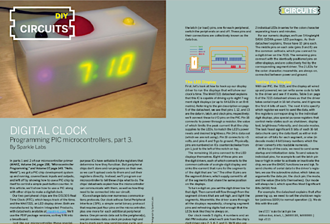
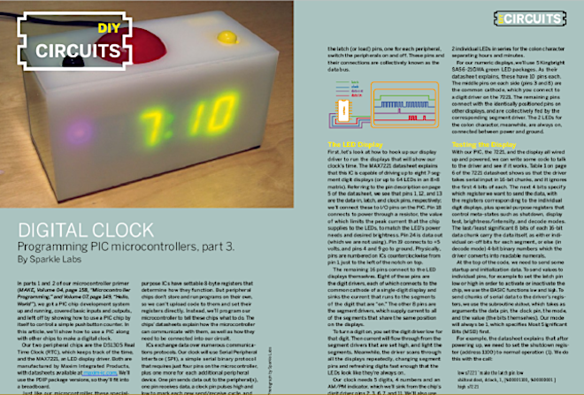
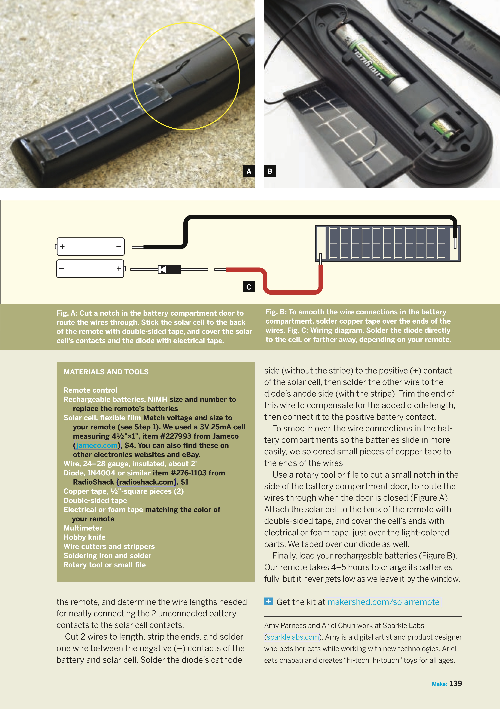
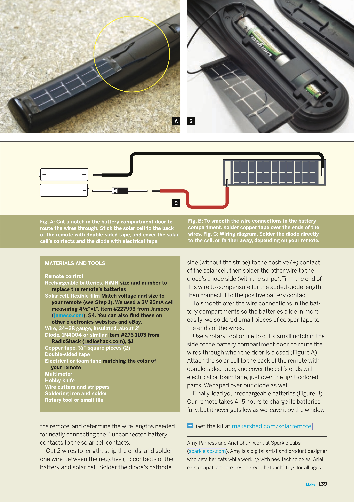

Make Magazine
As an early contributor to "Make: Magazine," I had the unique opportunity to be at the forefront of the maker movement, sharing knowledge and inspiring countless DIY enthusiasts. My articles, filled with hands-on projects and detailed instructions, quickly became a staple for readers eager to dive into the world of electronics and innovative creations.
One of my noteworthy contributions was a piece on "Squeezable Nightlight," where I detailed the process of creating a soft silicone light that combined tactile satisfaction with simple electronics. This project not only emphasized the intersection of design and functionality but also made complex concepts accessible to beginners. The hands-on approach and clear instructions helped readers comfortably tackle projects that might have seemed daunting.
Overall, my early involvement with "Make: Magazine" helped shape its voice and direction, solidifying its place as a cornerstone in the DIY community. Through my articles, I was able to share my passion for making and inspire a new generation of creators, proving that anyone, with the right guidance and motivation, can be a maker.
 

SunMod
I developed an innovative product known as the "SunMod Solar Hacking Kit," which harnesses the power of the sun to keep your TV remote functional without the need for frequent battery replacements. The idea stemmed from my desire to merge eco-friendly practices with everyday conveniences. By integrating a small solar panel onto the back of a standard TV remote and making use of rechargeable batteries, I was able to create a device that charges itself when exposed to sunlight, extending the battery life significantly and reducing electronic waste.
The article I wrote, titled "Solar TV Remote: Juice Your Flipper with Sunlight," provided step-by-step instructions for readers to replicate this sustainable project. With clear photographs and detailed diagrams, I guided DIY enthusiasts through the process of selecting the appropriate solar cell, modifying the battery compartment, and seamlessly integrating the solar charging system into their own remotes. The project not only highlighted the simplicity and feasibility of solar-powered devices but also emphasized the importance of innovative solutions in minimizing our environmental footprint.
The response from the maker community was overwhelmingly positive, with many readers sharing their success stories and further adaptations of the project. This article exemplified how thoughtful design and practical technology could come together to create everyday items that are not only functional but also environmentally responsible. Through this piece, I aimed to inspire others to rethink mundane objects and consider how small changes can lead to significant impact.
 

Rethinking Pink
In my article titled Rethinking Pink: A New Feminine Aesthetic in Tech Toys for Girls, I explored the evolving landscape of tech toys aimed at young girls and how these products are breaking away from traditional gender norms. The piece delves into the importance of designing toys that not only appeal to girls' diverse interests but also empower them with skills in technology and engineering. By moving beyond the stereotypical pink color schemes, manufacturers are embracing a more inclusive approach that respects and nurtures the varied interests of young girls, fostering a generation of innovative and technically adept women.
The article highlights several groundbreaking products that embody this new feminine aesthetic, showcasing how they successfully blend creativity, education, and empowerment. From programmable robots to DIY electronics kits, these toys serve as powerful tools in challenging the status quo and opening new avenues for girls in STEM. Through this article, I aimed to spark a conversation about the significance of thoughtful design in educational toys and to inspire both parents and developers to support and promote gender inclusivity in tech.